| Words | Definitions |
|---|---|
| Resource | It can be anything that needs to be protected for example : a picture of a user or an API operation. |
| Folder | Resource which can contains one or more resources. |
| File | Unique resource. |
| Authorization policy | Can contains one or more security rules and is assigned to one or several resources. It is used by the UMA server to determine if an incoming request can execute the requesting operations (read, write or delete) on a protected resource. |
| Security rule | Belongs to an authorization policy. |
| Resource owner | An entity capable of granting access to a protected resource. When the resource owner is a person, it is referred to as an end-user. |
| Scope | List of resources which can be accessed by a client. |
| Client | An application making protected resource requests on behalf of the resource owner and with its authorization. The term “client” does not imply any particular implementation characteristics (e.g., whether the application executes on a server, a desktop, or other devices) |
| UMA server | Server which is conformed to the OPENID-RFC 1 |
| OPENID server | Server which is conformed to the UMA-RFC 2 |
| Requesting Party Token (RPT) | An UMA access token associated with a set of authorization data, used by the client to gain access to protected resources at the UMA server. |
The following table lists the differences between our product and others: Lokit, Identity Server, Gluu server and AUTH0. It has been made in “29-08-2016”, if you noticed some differences don’t hesitate to contact-us by email.
| Lokit | Identity Server | Gluu server | AUTH0 | |
|---|---|---|---|---|
| Authors | Habart Thierry | Brock Allen & Dominick Baier | Gluu | Auth0 |
| Start date | October 2015 | January 2014 | March 2014 | November 2012 |
| Workflow Oauth2.0 | ||||
| Client credentials | OK | OK | OK | OK |
| Password | OK | OK | OK | OK |
| Refresh token | OK | OK | OK | OK |
| Workflow OpenId | ||||
| Implicit | OK | OK | OK | OK |
| Hybrid | OK | OK | OK | NOK |
| Other OPENID features | ||||
| Register a client (RFC) | OK | NOK | OK | NOK |
| Sign token (JWS) | OK | OK | OK | OK |
| Encrypt token (JWE) | OK | NOK | NOK | NOK |
| Invalidate session | OK | OK | OK | NOK |
| Client authentication methods (RFC) | ||||
| client_secret_basic | OK | OK | OK | OK |
| client_secret_post | OK | OK | OK | OK |
| client_secret_jwt | OK | NOK | NOK | NOK |
| private_key_jwt | OK | NOK | NOK | NOK |
| none | OK | NOK | NOK | NOK |
| Response modes | ||||
| Query | OK | OK | OK | OK |
| Fragment | OK | OK | OK | OK |
| Form_post | OK | OK | OK | OK |
| Other parameters | ||||
| claims (RFC) | OK | OK | OK | NOK |
| request (RFC) | OK | OK | OK | NOK |
| Quality | ||||
| Code coverage | 84% | Unknown | Unknown | Unknown |
| Nombre UTs | 633 | Unknown | Unknown | Unknown |
| UMA (RFC) | ||||
| UMA supported | OK | NOK | OK | NOK |
| UI | ||||
| UI exists | OK | OK | OK | OK |
| CRUD opened assets | OK | OK | OK | OK |
| CRUD uma assets | OK | NOK | OK | NOK |
| Resource organized by urls | OK | NOK | NOK | NOK |
| Enable or disable external identity providers | OK | NOK | OK | OK |
| Deployments | ||||
| Deployment methods | Docker or manually | Manually | Manually | Manually or hosted on the cloud |
| Others | ||||
| Number of OPENID certifications | 5 | 4 | 5 | 2 |
| Preferred languages | C# | C# | Java | No preference |
| Tools or methods used to easily interact with APIs | Visual Studio extensions and nugget packages | Nuget packages | Unknown | Unknown |
The schema below shows the interactions between components.
On a total of 11 components, there are 5 APIs, one visual studio extension, one website and four databases :
Manager API : used by the clients to execute CRUD operations on OPENID assets for examples : client or resource owners.
OpenId et UMA API : They are conformed to the RFCs OPENID and UMA.
Configuration API : used by the clients to manage the OpenId API configuration for example : enable or disable external identity providers.
WebSite API : an abstract layer which assigns Uris to resources.
WebSite : it is used by an administrator to manage resource access.
Visual studio extension : used by a .NET developer to easily interact with the different components in code.
The website is used by the administrator to manage the UMA and OPENID assets. Whereas the visual studio extension will be used by developers to access / protect resources such as API operations.
Use cases of both roles have been identified and they are described in the two next chapters.
Select one or more resources and click on the item “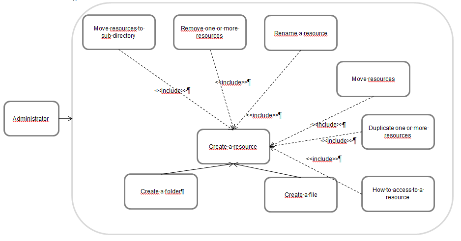” displayed in the context menu. Selected resources will be moved to a new sub directory.
Select some resources and execute one of the following actions :
Keyboard Shortcut : DEL
Action Delete in the contextual menu 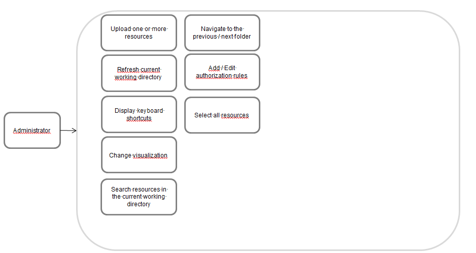
A resource can be renamed by executing one of the following actions:
Keyboard Shortcut : F2
Action Rename in in the contextual menu 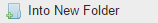
Select several resources and drag & drop them into an existing folder. A special icon will be displayed in the bottom-right left corner.
Select a resource and duplicate it by executing one of the actions :
Display the context menu and click on the actions copy & paste or duplicate.
Use the shortcuts “CTRL+C & CTRL+V“.
Select a resource and display its contextual menu. When the option “how to access?” is selected then a new window is displayed in front of the file explorer.
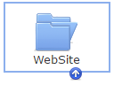
Display the contextual menu of your current working directory and click on the option new file 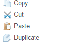.
Do the same than before but instead of clicking on new file select the action new folder  .
.
Resources can be uploaded via different ways:
Open a windows explorer and select several files, drag and drop them to the page “Protect your resources”.
Click on the option upload files displayed in the contextual menu
Either press F5 or click on the action reload in the contextual menu 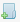
List of shortcuts can be displayed by pressing F1.
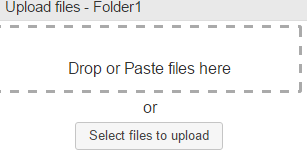
You can choose between vertical or horizontal resources visualization, to do that click on the icon displayed in the menu bar.
Accessible by pressing the keyboard shortcut CTRL+F or by typing your text in the search bar positioned at the top right-hand corner of the window.
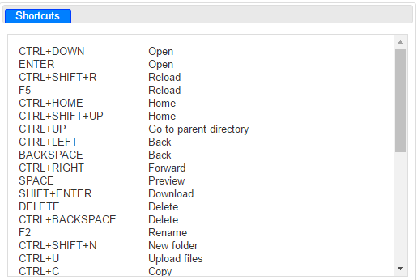
The navigation history is stored into your browser. Navigating to the previous / next folder can be done by executing one of the following actions :
Use the buttons displayed in the search bar
Keyboard shortcut Back or CTRL+← : navigate to the previous folder
Keyboard shortcut CTRL+→ : navigate to the next folder.
If a resource is selected then it’s possible to add or edit its authorization rules. Click on the icon or press the keyboard shortcut CTRL+P.
Rules and authorization policy were mentioned several times but they have never been clearly explained properly.
An authorization policy must contains at least one rule otherwise an error is displayed when attempting to create an empty one. They are used by the UMA server during the authorization process. Indeed when a client wants to access to a protected resource, he asked to the UMA resource an RPT token. The server internally decides to grant client access to a protected resource by executing the policy. The workflow is described in UMA website 3.
Rules are exclusive and if at least one of them is satisfied then authorization is granted by the policy. Here the authorization policy formula is : policy = rule1 ∪ rule2. A rule is satisfied if the received claims values and / or clients are correct.
Policy structure overview :
In order to help you identifying policy and their rules, you can read the scenario below.
Problematic : Only the end-user thabart of the application Sample Client is allowed to view his bank account N°12345.
Solution : In the first place the identities should be identified and classified by their nature. There are four important information in the scenario, they are underlined in the text. Thanks to the decision table it was possible to classified them.
| Question | Nature |
|---|---|
| What is the identity of your resource to protect ? | Resource identifier |
| What is the identity of your client ? | Client Identifier |
| Which actions do-you want to perform on the resource ? | Permissions |
| Do-you want to restrict access to one or more users ? If yes, which information can be used to identify them ? For example : role or geographical position ? | Claims |
| Can-you identify the nature of your resource ? | Nature |
Classified information :
Resource identifier : N°12345
Client Id : Sample Client
Permissions : view / read
Claims : thabart
Nature : BankAccount
When you have finished with the resource classification, you can go to the second step.
A resource needs to be created, first add a “BankAccount” folder into the “resources” directory, it should match with the nature of a resource.
Navigate to the new directory and create a file named “N°12345”, same value as the resource identifier.
Finally open the authorization policy editor and add a new rule. Below allowed clients select the authorized clients, in our case the client is “Sample Client”.
Under the sub-title “allowed claims” select “sub” et fill-in the field with “thabart”, then click on “Add” to add the claim into the list.
Persist your policy by clicking on add rule and on save.
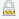
A red square is displayed around a resource with an authorization policy applied on it.

To select all resources press CTRL+A.
You probably noticed that the actions available in the assets directory have not been described, it will be the object of the next chapter.
Open the folder assets >> openid >> clients and display its contextual menu.
Click on add client 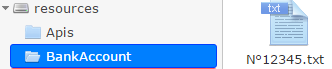 and fill-in the callback urls separated by a comma.
Warning : urls should begin with https 4
Select several clients, display the contextual menu and click on remove client
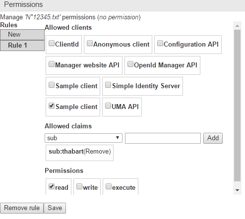.
Display the client information by clicking on client information 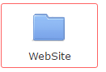 option in the contextual menu.
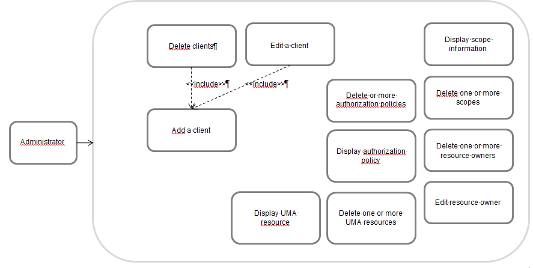
The client identity, secret and its callback urls are displayed on the new window.
Click on the link Edit to edit them.
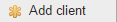
The parameters are explained in the OPENID RFC 5.
In most of the cases, advanced parameters don’t need to be updated except if you want to change the workflows. Here some uncommon scenarios in which advanced settings need to be updated:
The client have a JWKS url, it is used by the OPENID server to decrypt and / or check the signature of the request 6 parameter.
Update the client authentication method.
Change information displayed in the consent view.
If you want more information about the other advanced settings, you can contact-us or read the OPENID documentation7.
Open the directory assets>>openid>>scopes, select several scopes, display the context menu and click on remove scope 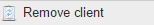.
Select one scope, open its contextual menu and click on scope information . The following information are displayed :
Nature : Is-it an openid scope?
Visibility : Is-it visible in the consent screen ?
Contract : Is-is returned by the openid configuration endpoint /.well-known/openid-configuration.
Select some resource owners, display the context menu and click on remove resource owner 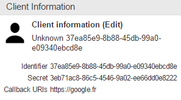.
Select a resource owner, display its context menu and click on resource owner info button 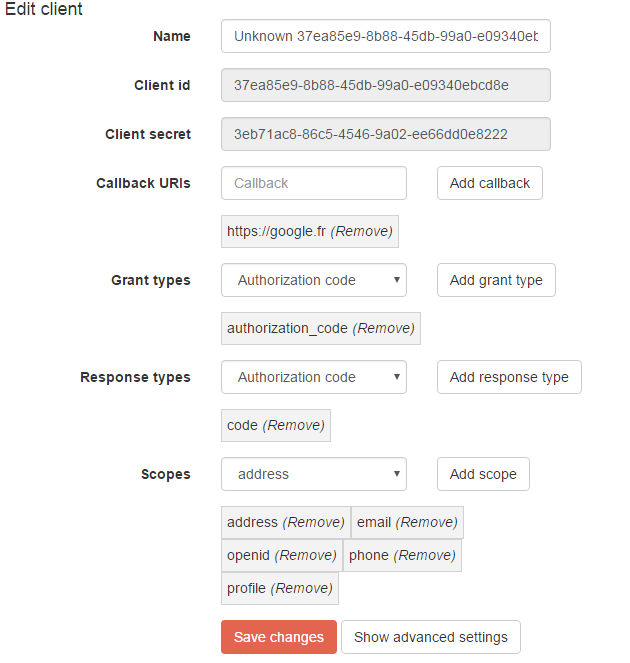.
In the new window displayed in front, roles can be assigned to the resource owner. To do that, a local account needs to be created otherwise the message “not a local account” is displayed.
Why is-it useful to add roles ? Sometime it’s difficult to make an authorization policy based on the claims returned by external identity providers. If you want to limit the access of a resource only to certain roles but the claims are coming from facebook, the solution cannot be implemented simply because roles are not returned. But thanks to the website, claims returned by facebook can be enriched with roles. If we replace facebook by ADFS, additional roles don’t need to be specified because they are already returned.
Enrichment workflow :
As we mentioned earlier a resource owner account can have two states :
When a resource owner is authenticated against one of the external identity providers : « Twitter », « Hotmail » or « GitHub » then an external account is automatically created.
To switch to a local account, click on the link create a local account:
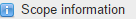
Open the folder assets>>uma>>authorization policies, select several authorization policies, display the context menu and click on remove authorization policy 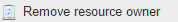.
Select an authorization policy, display its contextual menu and click on authorization policy 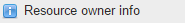. List of resources impacted by the policy and number of rules are displayed in the window.
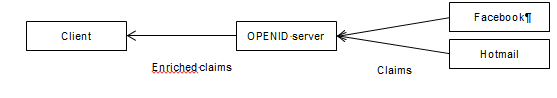
Open the folder assets>>uma>>resources, select one or more resources, display the contextual menu and click on remove resource 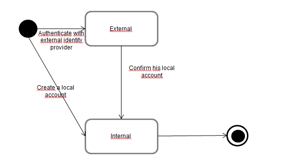.
Display the contextual menu and click on resource info 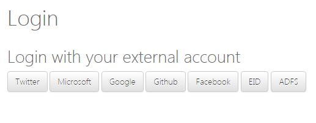. Scopes and resource are displayed in the window :
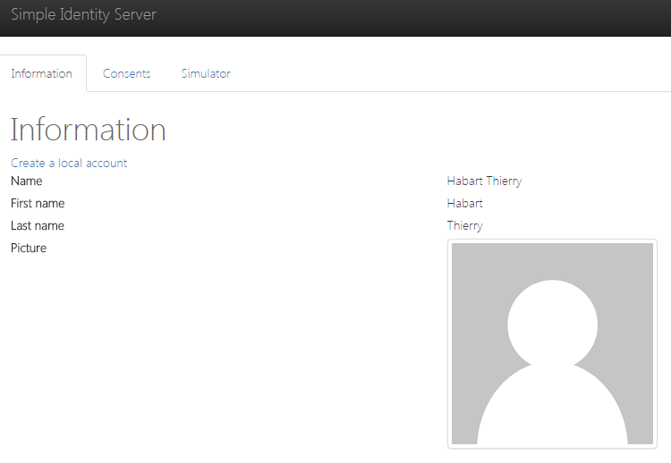
In the OpenId server, the end user can choose between one of the identity provider to authenticate himself: Hotmail, ADFS, GitHub or the Belgium id card.
When the claims are returned, they are used by the authorization policies to grant a request access to a protected resource.
If some claims are missing in the result, it’s always possible to enrich them with roles (refer to the chapter “edit a resource owner”).
List of actions available in the “connections” screen:
The following providers are configured by default: Microsoft, Linkedin, Google, GitHub, Facebook and the Belgium id card.
Click on the connections tab to display the providers.
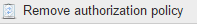
Providers can be enabled / disabled from the authentication page. To do that click on the button “On / Off” next to each provider.
By default an authentication page looks like:
New authentication page after the Facebook provider has been disabled:
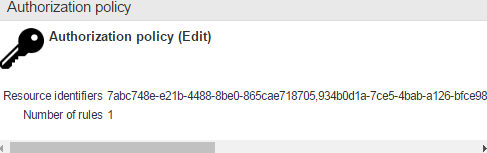
Providers are managed by the administrator without worrying about restarting application.
Click on the new identity provider button to add a new one. When the window is displayed, try to fill-in all the fields. Use the decision table below to find all the values. When you have finished with it, click on the button create to persist the new provider.
| Fields | Description |
|---|---|
| Name | Name displayed is the authentication page |
| Callback path | Technical data used by the OPENID server. The value should start with « /signin-* » otherwise there is no button displayed |
| Choose an identity provider type | Choose between OPENID, OAUTH2.0 or WS-Federation |
If there is no corresponding identity provider type, you can submit a new “enhancement” ticket to our website. The feature will be developed and deployed to your environment via Docker or XCOPY (refer to the Installation chapter)
If you want to use the resource owners which are stored in your database. We can help you writing some scripts to migrate from the old schema to the new one or create a new OPENID identity provider which takes your database as source.
Click on the provider title to edit it. You will be redirected to a new window where all the parameters are displayed. You will probably notice some differences between types, they are listed in the table:
| Type | Parameters | Options |
|---|---|---|
| OAUTH2.0 | Callback path | TokenEndpoint |
| Namespace | AuthorizationEndpoint | |
| Class | Scope | |
| Code | ClientId | |
| UserInformationEndpoint | ||
| ClientSecret | ||
| OPENID | Callback path | ClientId |
| Scope | ||
| ClientSecret | ||
| WellKnownConfigurationEndPoint | ||
| WSFEDERATION | Callback path | Realm |
| Namespace | IdEndpoint | |
| Class | ||
| Code |
All parameters except namespace, code and class can be deduced with the configuration of your external identity providers for examples: the client identifier or secret. Those specific parameters are used by the OPENID server to parse xml or json and returns OPENID claims.
Those specific settings are not present in OPENID for a very simple reason, because a parser is not needed when OPENID is correctly implemented. The complete list of applications compliant with the standard is available online 8 .
The parameter “code” presents in OAUTH2.0 and WS-Federation should contains a class with a method that respects a certain signature:
When the code has been written, the fields namespace and class name can be filled-in with their corresponding values. If we have the code below then the namespace is “Parser” and class name is “Example” :
Parameters are accessible via the “settings” tab. The token / authorization code expiration times can be updated.
The extension is working only with Visual Studio version 2015. The previous versions will be supported in future release.
The configuration window is accessible via “Tools >> Options >> SimpleIdentityServer”. There are two URLs, the first one is used by the “generate resource” feature to generate a resource for each selected actions.
The other url is mostly used to retrieve an access token via client credentials, it is passed in the Authorization header to access to protected operations.
Choose any API project for which you want to protect its operations and display its contextual menu, then click on the option generate resource 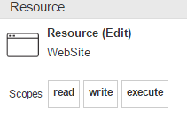
Don’t worry if it takes some times to load the operations. If after a while they are not displayed then close the panel window, select the project and reopen it again.
Here some features available in the window:
To refresh the resources, just click on the button refresh. It will take some times before they are displayed.
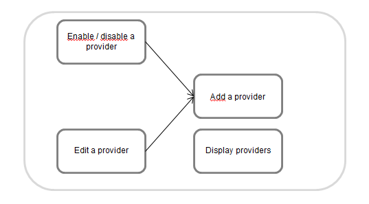
Select the resources that you wish to protect and indicate the API version. It’s very important to mention it because several versions of the same API can be deployed and they can present different contracts. The number should be incremented if there are any breaking changes with the previous version.
When the form has been filled-in then click on the button protect to protect the resources.
Behind the scene the following sub-tasks are performed :
Create a resource by following a naming convention : “Api\<assembly name>\<version number>\<controller name>\<action>”
Add Nuget packages : “SimpleIdentityServer.UmaIntrospection.Authentication” and “SimpleIdentityServer.Uma.Authorization”
Add a test file “Startup_Sample.cs”, it can be reused to protect the operations.
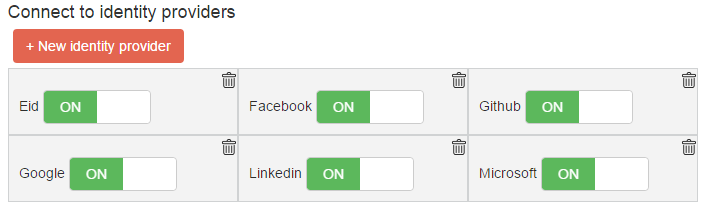
Technical details are described in the « technical documentation »».
An application / client who wants to access to protected resources, needs to retrieve an RPT token first and passes it to the Authorization request header. To do that the option generate security proxy can be used by the developer.
The following actions are available in the window:
Type the name in the search bar and click on “search” to confirm.
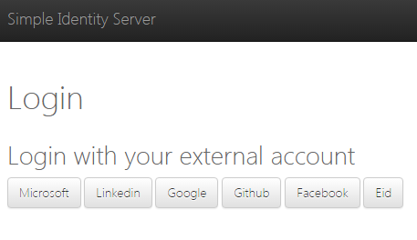
Select one resource and click on Add. The following sub-tasks are performed :
Install the Nuget package : “SimpleIdentityServer.Proxy”
Add files to the selected project :
SecurityProxy_*.cs : contains a static method which can be used to retrieve an RPT token
AuthProvider.cs : can be used to retrieve an identity token via resource owner credentials
In this chapter we will focus on the most common problems in enterprise, and we will try to solve them.
Samples can be found here :
https://github.com/thabart/SimpleIdentityServer.Samples.git
Context An e-commerce enterprise has internally developed a tool used by his marketing team, to retrieve information about his most loyal clients.
The application has been developed in WPF and interact with a RESTFUL API to retrieve the clients. Only this application and users that belong to the “marketing” group are authorized to retrieve the list.
Problem: How the application can access to the protected operation?
Solution:
The workflow is made of three big steps:
Identity token: retrieve an identity token with implicit grant-type 9. The token is returned to the client in a callback parameter.
RPT token The identity and access token (valid for the scope uma_authorization) are passed in the request to retrieve the RPT one 10. When it is received by the WPF application, the token is passed in the Authorization header to retrieve the loyal clients. Both parameters are required by the authorization policy.
Check RPT token: The token is checked against the introspection endpoint 11, this endpoint is offered by the UMA server.
We spared you the implementation details, otherwise it will be too much difficult to understand. The workflow is normally much more complex and contains more intermediate steps.
Before going further, we are going to prepare the environment by following the steps:
The decision table can help you identify and classify them.
| Questions | Type |
|---|---|
| Which application wants to access to the resource ? | Client |
| Which operation do-you want to protected ? Identify the service name, his version, the business entity (client, product) et operation. | Resource : Concatenation of service name, version number, business entity and operation. |
| Which applications are authorized to access ? | Authorized clients |
| Which resource owner informations are accepted ? | Claims |
Result:
Client: WPF application
Resource ClientApi / v1 / Clients / Get
Authorized clients : WPF application
Claims : role marketing.
When you have finished, the identities can be added.
Add a new client and edit his properties (for more information refer to the use cases “add a client” and “edit a client”). In the new window update as many properties as you can. There are parameters very easy to update like the displayed name and callback urls, however some of them are not obvious. Try to guess the grant-types value, they are needed by the client to interact with the other components. If you succeed, then other values can be easily deduced.
The better way to choose grant-types is by identifying all interactions with the OPENID server. Only one interaction has been identified in the workflow. An identity and access token (valids for the scopes “uma_protection” and “uma_authorization”) are returned to the client. Keep in mind that whatever the situation, when a client is trying to retrieve an RPT token, an access token valids for both scopes should be retrieved.
Depending on the technical implementation of the client, the grant-type can be different. Relationships between implementation type and grant-types are listed:
| Implementation | Grant-Type | Advantages | Disadvantages |
|---|---|---|---|
| Embedded browser | implicit | Authentication is delegated to OPENID | No control over the look and feel |
| Create formula | client_credentials | Control look and feel | The code must be obfuscated, because the client identifier and secret must be hidden from malicious users. Don’t choose this approach if there is no trust relationship between the client and server. |
When you have the grant-types then the other parameters can be deduced. Just answer the questions of the next two tables:
| Grant type | Response types |
|---|---|
| Authorization code | Authorization code |
| Implicit flow | Token |
| Authorization code | |
| Identity token | |
| Client credentials | |
| Password | |
| Refresh token |
Mappings between grant-types and response-types
| Type token | Scopes |
|---|---|
| RPT token | uma_authorization |
| uma_protection | |
| Identity token | Openid |
| Profile | |
| Role | |
| Complete list can be found in the documentation 12 |
Mappings between tokens and scopes
When all the parameters have been found, the edit page can be filled-in:
Callback uris : https://client.com
Grant types implicit
Response types: token, id_token
Scopes: openid, profile, role, uma_authorization, uma_protection
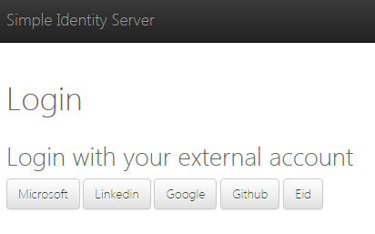
There are different two ways to add a resource, either with the website (refer to the use case “create a folder”) or either with the Visual Studio extension (refer to the use case “generate one or more resources”). In both cases, the name must respect a certain convention which has been decided by you and it must be consistent with the other resources. For example, imagine there are two pictures, one “Thierry\picture.png” and an another “Lokit \ picture.png”. At first glance this organisation seems to be awkward, and it can be easily reorganized in something cleaner: “images\thierry-picture.png & images\lokit-picture.png”.
If your resource is an API operation, then we suggest to respect this convention: “Apis \ <application name> \ <version number> \ <business entity> \ <operation>”
In our scenario the resource name is: « Apis \ ClientApi \ v1 \ ClientsController \ Get ». If you are working with the Visual Studio Extension you don’t have to be worried about the name because the convention is respected.
We really insist on the fact that it’s very important to have a good architecture since the beginning. If later the structure is modified, then all the resource consumers will be impacted and they must be updated and redeployed again.
When the client and resource have been created then the authorization policy can be assigned. If you encounter some difficulties to identity clients and claims, you can always refer to the use case “Add / Edit authorization rules”.
Allowed clients: WpfClient
Allowed claims: role marketing
Permissions: execute
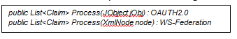
The marketing role have to be assigned to the resource owner, otherwise the authorization policy will never pass. Choose a resource owner, edit his properties and assign the role.
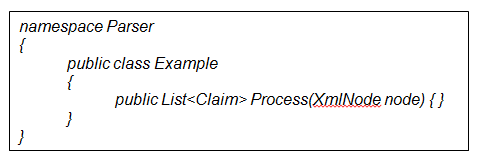
When you have finished with the initial setup, you can start to implement the changes.
There are two different kinds of authorization policies:
Conventional: the URL of the resource must match the structure of the project and also the API version. The last value can be set to the property “ConventionalUmaOptions.Version”.
Individual: limit the access to one specific resource by passing the URL and scopes.
The technical implementation is running only on ASP.NET CORE projects. If you are working on a previous version, we can help you with the implementation.
Previous versions will be supported in future release.
The Nuget packages
« SimpleIdentityServer.UmaIntrospection.Authentication » and « SimpleIdentityServer.Uma.Authorization » must be installed on your API project.
Enabling the conventional authorization is pretty simple. Insert the code below into the method “ConfigurationServices” of the Startup class.
L’opération « ClientController/Get » doit ensuite être décorée par l’attribut : 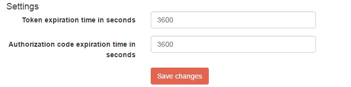
In first place, add the Nuget package “SimpleIdentityServer.Proxy” to your client. You need it get an RPT token to retrieve the list of clients.
An authentication window must be displayed by your application. There are two different ways to do it, either by displaying the OPENID authentication webpage inside an embedded browser or with a WPF formula. Whatever the methodology you have chosen, at the end the identity and access tokens must be retrieved and stored.
Our preference of course is to use an embedded browser, because we don’t trust the OPENID server.
The following code is used to retrieve an RPT token. Don’t forget to update the properties like UmaConfigurationUrl, OpenIdConfigurationUrl and RootManagerApiUrl.
Invoke the method GetRptToken and pass the tokens as parameters. When the RPT is received, it can be passed to the authorization header.
If you want to launch the application, open the solution “Scenario1 \ WpfClient” from the repository “SimpleIdentityServer.Samples”. Open the two files ”UI\WpfClient\SecurityProxyClientApi”, “UI\WpfClient\Constants” and update their properties.
Launch the application and enters the credentials of a resource owner with marketing role.
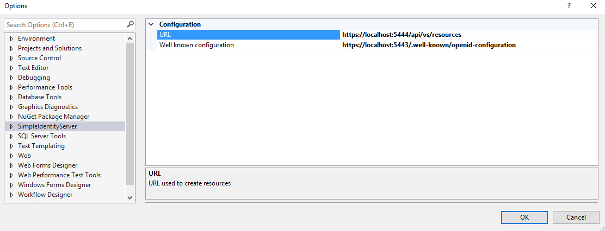
If the authentication succeeds, then the list of clients is displayed:
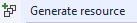
Context: A new RESTFUL service has been developed to retrieve the most loyal clients. Those data must be enriched with marketing information, they have been gathered by the marketing team since the creation of the enterprise.
At the end consolidated data must be returned by the API. They will be consumed by analytics tools to follow the evolution of client satisfactions.
Problem : How the API can access to the clients ?
Solution:
The workflow presents here is very to similar to the one in the first scenario. There is only one difference, the identity token is not returned to the client. The reason is simple, if the client is correct then an RPT token is granted by the UMA server. User information are not needed by the authorization policy then by deduction the identity token doesn’t have to be passed in the request.
The workflow that we are going to follow to implement the solution looks like the one in the previous scenario. The task “assigned marketing role to the resource owner” have been removed.
After using the decision table (refer to the previous scenario) we obtained :
Client : API
Resource : ClientApi / v1 / Clients / Get
Authorized clients : API
Claims : none
Most of the parameters can be easily deduced including the grant-type ! Which grant-type will you choose by taking into account that there is a trust relationship with the OPENID server and there is no identity token ?
The correct answer is … “client_credentials”. Indeed there is no danger to embed the client credentials into the code because the API is hosted in a server, so the code cannot be accessed by malicious users.
Client parameters :
Grant-types : client credentials
Scopes : uma_authorization et uma_protection
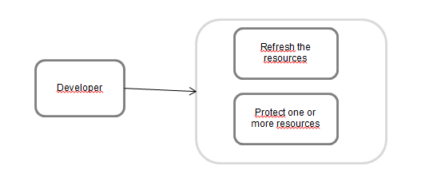
The resource already exists (refer to the first scenario).
Edit the authorization policy of the resource « resources \ Apis \ ClientApi \ v1 \ ClientsController \ Get » and add a new rule. If you have some doubts about the parameters, we invite you to re-read again the use case « add / edit authorization policy rules ». It’s very important to guess by yourself the parameters, at the beginning it’s difficult but you will quickly take the habit.
Rule parameters :
Allowed clients : Marketing API
Allowed claims : empty
Permissions : execute
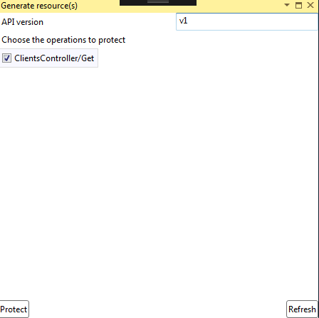
Install the Nuget package « SimpleIdentityServer.Proxy » to your client.
Retrieve an access token valids for the scope “uma_protection” and “uma_authorization” by using the grant-type client_credentials.
Invoke the function « GetRptToken » and pass the access token value as parameters (umaProtectionToken and umaAuthorizationToken). The result can be used to retrieve the clients.
If you want to launch the complete example, open the solution « Scenario2 \ MarketingClient » from the repository « SimpleIdentityServer.Samples » and update the properties.
Launch both projects “ClientApi” and “MarketingClient” and browse the URL :
http://localhost:5103/api/ratings. The clients will be displayed in the browser.
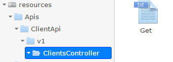
Contexte : Les utilisateurs avec le rôle « administrator » peuvent voir le bouton « administrate » sur le site internet tandis que les autres ne le peuvent pas.
Problème : Comment limiter l’accès à certaines fonctionnalités selon le rôle des utilisateurs ?
Solution :
Comparé aux autres scénarios, le workflow présenté ci-dessous est assez simple :
L’utilisateur s’authentifie auprès du serveur OPENID. Une fois authentifié alors les identity & access tokens sont retournés au site internet.
Les permissions sont ensuite récupérées du serveur UMA et stockées dans un cookie. Les tokens qui ont été récupérés sont passés en paramètre de la requête.
Comme les scénarios précédents nous allons suivre une méthodologie afin d’implémenter la solution.
Voici les entités que l’obtient après avoir utilisé le tableau de décision :
Client : WebSite
Ressources : WebSite \ Scenario3 \ Home \ Admin
Liste des clients autorisés : WebSite
Liste des claims : rôle « administrator »
Une fois de plus les paramètres sont assez faciles à déduire excepté le grant type. Le choix dépend encore une fois de la façon dont vous souhaitez authentifier les utilisateurs finaux. Si votre choix se porte sur le développement d’un formulaire « login » & « mot de passe » alors le grant type choisi sera « password ». Faîtes bien attention si vous choisissez ce grant-type car il est nécessaire d’avoir une relation de confiance avec le fournisseur d’identité et les identifiants du client « Id » & « secret » doivent être cachés du public.
Si au contraire vous souhaitez déléguer cette problématique d’authentification au serveur OPENID, choisissez alors le grant-type « implicit ». Lors de l’authentification l’utilisateur sera redirigé vers le serveur OPENID qui retournera ensuite les tokens. Notre préférence est toujours de choisir le grant-type le plus fiable et facile à implémenter, c’est pour cela que ce dernier a été sélectionné.
Faîtes bien attention de ne pas oublier les scopes obligatoires « uma_authorization » & « uma_protection » car il y a une interaction avec le serveur UMA.
Paramètres du client :
Callback url : https://localhost:5105/Authenticate/Callback
Grant types : implicit
Response types : token & id_token
Scopes : uma_protection, uma_authorization, role, openid, profile
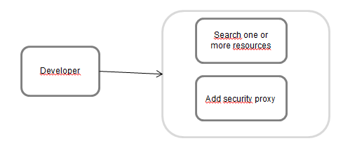
Ajouter la ressource « WebSite \ Scenario3 \ Home \ Admin ».
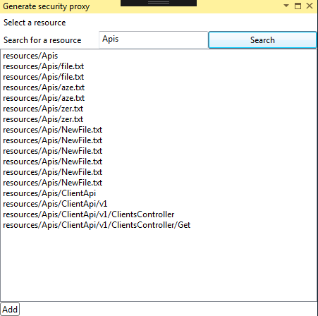
Ajoutez une politique d’autorisation à la ressource. Essayez encore une fois de deviner les paramètres en vous appuyant sur le contexte ainsi que sur la description du cas d’utilisation : « Ajouter / Editer les règles d’autorisation ».
Allowed clients : WebApplicationScenario3
Permissions : read
Allowed claims : rôle « administrator »
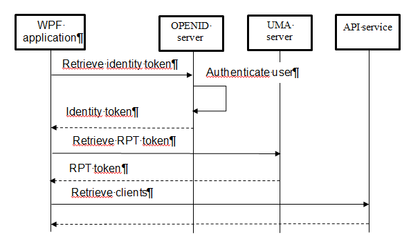
. Editez les propriétés du resource owner de votre choix et ajoutez lui le rôle « administrator ».
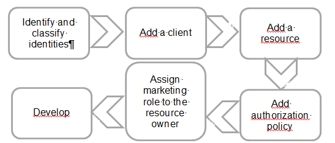
Je vous invite à jeter un œil au projet «Scenario3 \ WebApplication » du repository « SimpleIdentityServer.Samples ». Mettez à jour les paramètres du fichier « Constants.cs » et lancez l’application.
Si vous-vous connectez avec un utilisateur qui possède le rôle « administrator » alors la permission « Admin » est affichée, autrement il n’y a que trois permissions.
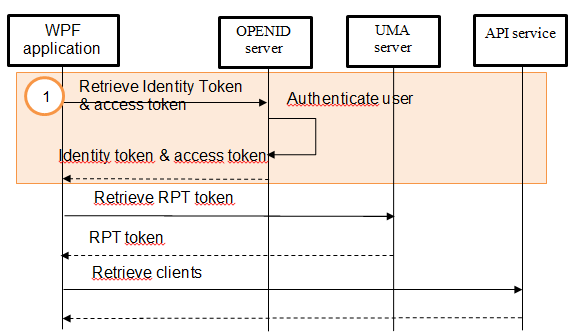
Permissions d’un utilisateur « administrator »
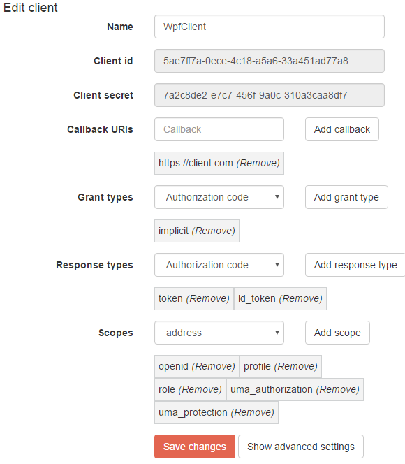
Permissions d’un utilisateur non « administrator »
Le guide part du principe que l’architecture va être installée sur la même machine. Gardez à l’esprit qu’il est tout à fait possible de déployer séparément les différents composants. Cela peut être utile si souhaitez mettre en place le load balancing, pour plus de précisions référez vous au chapitre « Documentation technique \ Load balancing ».
Que vous choisissez d’installer le produit manuellement ou par Docker, il y a quelques prérequis à installer sur votre machine.
GIT doit être installé afin de récupérer les sources du projet, suivez le guide du site officiel : (link)
Le certificat « LokitCA.cer » joint au produit doit être installé sur votre machine dans « Certificate Store \ Local User \ Trusted CA ». Sans le certificat le site web ne pourra pas interagir avec les APIs.
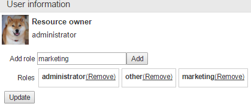
TODO
Le produit est déployé sur plusieurs conteneurs Docker. La procédure est assez simple et se résume en quelques étapes. Mais avant de commencer vous devez vous assurer que les prérequis suivants ont bien été installés et configurés sur votre machine.
Docker doit être installé, vous pouvez suivre le guide sur le site officiel (lien) qui est très bien expliqué :

Par défaut Docker utilise VirtualBox pour lancer sa machine virtuelle. Des règles de redirection de ports doivent être ajoutées sur la machine « default », sans quoi vous ne pourrez pas naviguer sur le site :
Ouvrez VirtualBox et sélectionnez la machine « default »
Cliquez sur « Configuration » puis sélectionnez l’onglet « network »
Cliquez sur le bouton « port redirection » et assurez-vous de bien avoir les mêmes règles :
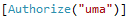
Note : Une règle de redirection manque dans la capture d’écran. Ajoutez la sinon les logs ne pourront pas être affichés sur le site :
Nom : Kibana
Protocol : TCP
IP hôte : 127.0.0.1
Port hôte : 5601
Port invité : 5601
Toujours dans le même invité de commande, exécutez l’instruction « docker-compose up » et attendez que le produit se lance.
Une fois l’application installée et déployée, vous pouvez vous connecter en tant qu’administrateur au site web http://localhost:4200.
Pour observer les événements naviguez sur l’onglet « Logs » du site. Si c’est la première que vous vous y rendez alors configurez un index de recherche avec cette valeur « simpleidserver-* » puis importez le fichier « Kibana-Exports\export.xml ». Le dashboard sera alors configuré et visible à partir du site.
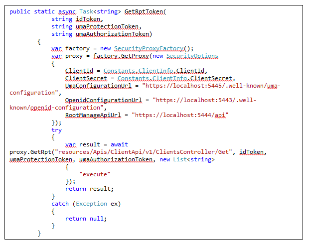
La fenêtre est composée de 4 widgets :
Affiche tous les événements qui ont lieux dans le serveur OPENID
Suivre l’évolution du nombre de « tokens » qui ont été accordés au fil du temps.
Voir le nombre d’erreur d’autorisations ainsi qu’un autre widget qui affiche les erreurs d’autorisation.
Installez le sur votre client afin de pouvoir facilement récupérer un RPT token et l’utiliser pour accéder à une ressource protégée.
Installez le sur un projet ASP.NET CORE qui contient des ressources sensibles. Il authentifie les requêtes qui ont un RPT token dans l’Authorization header.
Installez le sur un projet ASP.NET CORE afin de mettre en place la politique d’autorisation.
Pour mettre en place le load balancing il est nécessaire de déployer les APIs sur différentes machines. Ces derniers peuvent tourner sur n’importe quel OS (Linux, Windows ou MAC) grâce au Framework DOTNET CORE 13. Choisissez parmi l’une des solutions (ou autre) de load balancing (HalProxy etc …) et implémentez cette architecture :
| Tâche | Priorité | Avancement |
|---|---|---|
| Ajouter un nouveau type de fournisseur d’identité SAML | 5 | DONE |
| Ajouter le code pour les fournisseurs d’identité OPENID | 5 | DONE |
| Afficher le bouton pour créer un fournisseur d’identité externe | 5 | DONE |
| Ajouter un fournisseur d’identité externe | 5 | DONE |
| Afficher le nom de l’utilisateur & son image & un bouton de déconnection | 5 | DONE |
| Vérifier le rôle de l’utilisateur | 5 | DONE |
| Vérifier pourquoi tous les fournisseurs d’identité ne sont pas affichés dans l’application WPF | 5 | DONE |
| Lorsque le client ne peut pas être authentifié alors retourner un message d’erreur lisible | 5 | DONE |
| Modifier le titre « GenerateResourceCommand » | 5 | DONE |
| Décrire le premier scénario | 5 | DONE |
| Afficher les clients | 5 | DONE |
| Utiliser un seul token pour plusieurs accès | 5 | DONE |
| Décrire le second scénario | 5 | DONE |
| Décrire le troisième scénario | 5 | DONE |
| Supprimer la propriété « include sub » de UmaIntrospection | 5 | DONE |
| Utiliser WS-Federation AUTH0 | 5 | DONE |
| Ajouter une partie dans le document sur Kibana | 5 | DONE |
| Ajouter la partie EASY DEPLOYMENT | 5 | DONE |
| Héberger le site internet | 5 | TODO |
| Déployer la solution sur azure (avec docker) | 5 | TODO |
| Sécuriser l’API | 5 | TODO |
Afin de créer une machine virtuelle sur Microsoft Azure avec docker d’installé dessus alors lisez la documentation : https://azure.microsoft.com/fr-fr/documentation/articles/virtual-machines-linux-dockerextension/
RFC OPENID : http://openid.net/specs/openid-connect-core-1_0.html↩
RFC UMA : https://docs.kantarainitiative.org/uma/rec-uma-core.html↩
RPT token : https://docs.kantarainitiative.org/uma/rec-uma-core.html#rfc.section.3.5.1↩
Redirect_uri validation rules : https://openid.net/specs/openid-connect-registration-1_0.html#ClientMetadata↩
Client parameters : https://openid.net/specs/openid-connect-registration-1_0.html#ClientMetadata↩
Request parameter : http://openid.net/specs/openid-connect-core-1_0.html#JWTRequests↩
OPENID documentation : http://openid.net/specs/openid-connect-core-1_0.html↩
Applications compliants with OPENID : http://openid.net/certification/↩
Implicit grant type : http://openid.net/specs/openid-connect-implicit-1_0.html↩
RPT token : https://docs.kantarainitiative.org/uma/rec-uma-core.html#rfc.section.3.5.1↩
Introspection endpoint : https://docs.kantarainitiative.org/uma/rec-uma-core.html#rfc.section.3.4.1↩
Liste des scopes : http://openid.net/specs/openid-connect-core-1_0.html#ScopeClaims↩
DOTNET CORE : https://www.microsoft.com/net/core#windows↩